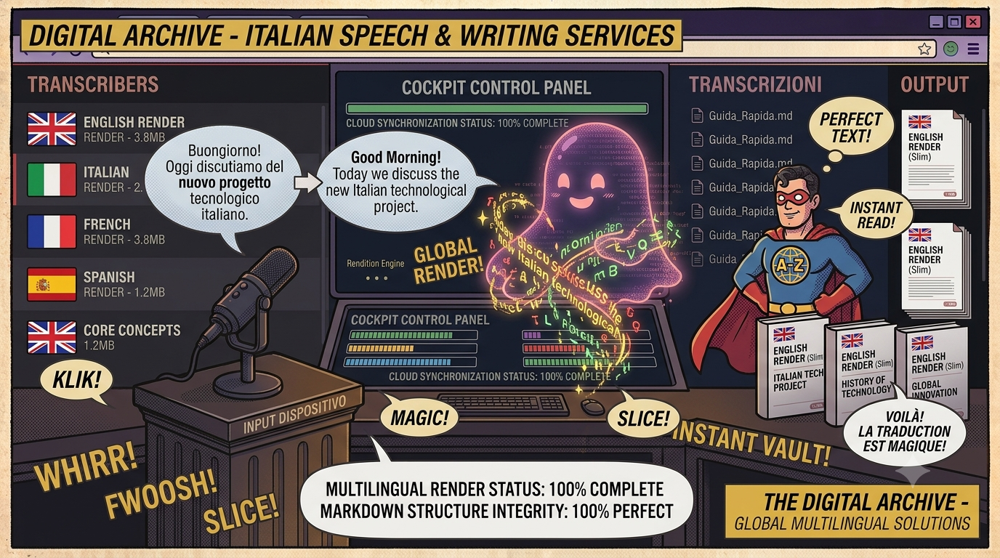

← Torna ai progettiNovoDictate
Dettatura italiana intelligente con riconoscimento vocale Faster-Whisper e correzione grammaticale LanguageTool. Parla in italiano e scrivi testo perfetto — tutto offline, multipiattaforma, con un'interfaccia moderna in PyQt6.
📖 Cos'è
NovoDictate è un'applicazione desktop multipiattaforma per la dettatura vocale in italiano con correzione grammaticale integrata. Basta parlare al microfono e il testo appare sullo schermo in tempo reale, con la possibilità di correggere automaticamente la grammatica con un click. Basata su Faster-Whisper per un riconoscimento vocale veloce e accurato (anche su CPU), e su LanguageTool per la correzione grammaticale italiana. Include Voice Activity Detection (VAD) con WebRTC VAD per ridurre i falsi positivi, calibrazione adattiva del microfono, e chunking dinamico con overlap per mantenere il contesto tra i segmenti audio.
👤 A chi serve
NovoDictate è pensato per chiunque scriva in italiano e voglia risparmiare tempo. Professionisti che producono documenti, email o report possono dettare il testo invece di digitarlo, con la sicurezza di una correzione grammaticale automatica. Studenti e ricercatori possono prendere appunti velocemente durante lo studio. Content creator, giornalisti e scrittori possono catturare idee al volo senza interrompere il flusso creativo. Persone con disabilità motorie o difficoltà di digitazione trovano in NovoDictate uno strumento di accessibilità potente e gratuito. Funziona offline — nessun dato audio lascia il tuo computer.
⚙️ Come funziona
NovoDictate cattura l'audio dal microfono tramite sounddevice e lo elabora in tre fasi: VAD (WebRTC Voice Activity Detection) rileva la presenza di voce in ogni frame da 30ms, scartando il silenzio; Chunking dinamico accumula l'audio con voce e lo invia a Whisper quando viene rilevata una pausa (>1s) o quando il chunk raggiunge la durata massima (10s), mantenendo un overlap di 0.5s tra i chunk per preservare il contesto; Faster-Whisper (modello base di default, configurabile da tiny a large) trascrive l'audio in italiano con elevata accuratezza. La pipeline audio include noise reduction, normalizzazione e filtri per migliorare la qualità in ambienti rumorosi. La correzione grammaticale è on-demand via LanguageTool.
✨ Core Features
- 🎤 Dettatura in tempo reale — Parla in italiano e vedi il testo apparire mentre parli
- ✨ Correzione grammaticale — LanguageTool integrato, attivabile con un click
- 🎙️ Voice Activity Detection — WebRTC VAD riduce i falsi positivi e migliora la latenza
- ⏸️ Pausa/Riprendi — Metti in pausa la dettatura senza perdere il contesto
🎛️ Elaborazione Audio
- Pipeline audio completa — Noise reduction (noisereduce), normalizzazione, filtri passa-banda
- Calibrazione adattiva — Percentile RMS e noise floor dinamico per adattarsi all'ambiente
- Chunking dinamico — Overlap di 0.5s tra i chunk per preservare il contesto
- Indicatore audio — Barra live del livello microfono nella toolbar
🧠 Modelli Whisper
NovoDictate supporta tutti i modelli Faster-Whisper, selezionabili da riga di comando:
| Modello | Dimensione | RAM | Velocità | Accuratezza |
|---|---|---|---|---|
tiny | ~72 MB | ~1 GB | ⚡⚡⚡⚡⚡ | ★★☆☆☆ |
base | ~142 MB | ~1 GB | ⚡⚡⚡⚡ | ★★★☆☆ |
small | ~466 MB | ~2 GB | ⚡⚡⚡ | ★★★★☆ |
medium | ~1.5 GB | ~5 GB | ⚡⚡ | ★★★★★ |
large | ~2.9 GB | ~10 GB | ⚡ | ★★★★★ |
🎨 Interfaccia Utente
- Tema dark moderno — Palette viola/indaco con stile glass morphism
- Textbox scorrevole — Testo in tempo reale con auto-scroll
- Barra strumenti — Avvia/Ferma, Pausa, Calibra, Correggi, Copia, Pulisci
- Status bar — Feedback in tempo reale sullo stato del motore
- Indicatore audio — Widget custom per il livello microfono
🏗️ Tecnologia
- Faster-Whisper — Riconoscimento vocale CTranslate2, fino a 4× più veloce di OpenAI Whisper
- WebRTC VAD — Voice Activity Detection ottimizzato per voce umana
- LanguageTool — Correzione grammaticale italiana con regole linguistiche
- PyQt6 — Interfaccia desktop nativa multipiattaforma con stile Fusion
- sounddevice + scipy — Acquisizione audio e processing del segnale
🧪 Test Suite
Suite di test completa con pytest: test per il motore di dettatura, VAD chunking, processing audio, correzione grammaticale, e interfaccia grafica. Include un benchmark di trascrizione per misurare le performance con diversi modelli Whisper.
💻 Utilizzo
# Avvia con modello base (default)
python main.py
# Modello più veloce
python main.py --model tiny
# Alta qualità
python main.py --model medium🌍 Compatibilità
- Windows 10/11
- macOS (Apple Silicon / Intel)
- Linux (Ubuntu, Fedora, Debian, Arch)